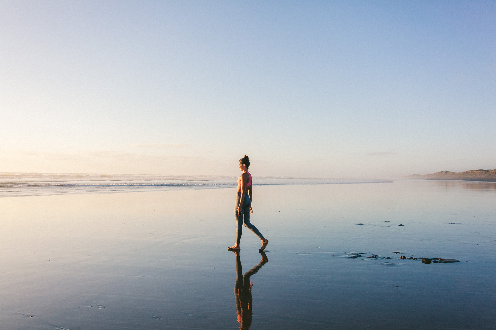

<div class="mv-about">

    
    
    <div class="pushed-wrapper">
       
        <div class="mv-mission">

            <h2>About Mindful Voices</h2>

            <p>
            At Mindful Voices, we create experiences, share tools, and host conversations centred around the practice of
            mindfulness. We live in a world where social media and technology blur the lines between illusion and reality, past and present,
            society and self. Our mission is to share practical and accessible tools to improve mindfulness in all areas of life.
            Our experiences encourage you to look inward and find space to breathe. Be comfortable with a moment’s silence. Gain
            perspective. Be exposed to wisdom, both ancient and emerging.
            </p>
            
            <p>
            Our first release explores the importance of sleep and how a good night’s sleep can impact our daily lives. Our nidras
            and meditations are designed for seekers and sceptics alike and provide a guided path to explore mindfulness and start
            thinking about present moments instead of worrying solely about the future or dwelling on the past.
            </p>
            <br><br>

            <h2>Our Founders</h2>

            <p>
            Mindful Voices was created by Hannah Crerar and Alisha Daya. Hannah holds degrees in law, accounting, and psychology and
            is a certified yoga instructor. Hannah is always experimenting with ways to fuse modern psychology with ancient healing
            modalities to strengthen the mind/body connection. Hannah gives voice to all meditations and recordings on Mindful
            Voices. Alisha holds degrees in law and science. As a self-taught coder, Alisha is interested in using technology to
            tell stories and improve the human experience.
            </p>


        
        <p>
        If you would like to contribute music or recordings of your own to Mindful Voices, you can reach out to Alisha or Hannah
        via email: alisha@mindfulvoices.co or hannah@mindfulvoices.co. </p>
        </div>

       
    </div>
</div>


    </div>
</div>